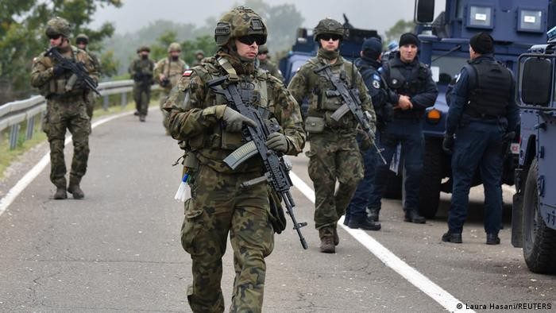

Gergely Husz
No Compromises, No Settlement — The Serbia — Kosovo Dialogue

Road blockades, armed men, protests, and diplomatic spats. Tensions between Serbia and Kosovo flared again. Tensions between Serbia and Kosovo flared again recently when the Government in Pristina announced it would oblige Serbs living in the north to start using car license plates issued in Pristina instead of Serbian ones. The result: roadblocks, closed border crossing points, armed men, tense protests, and hostile political rhetoric between Belgrade and Pristina.